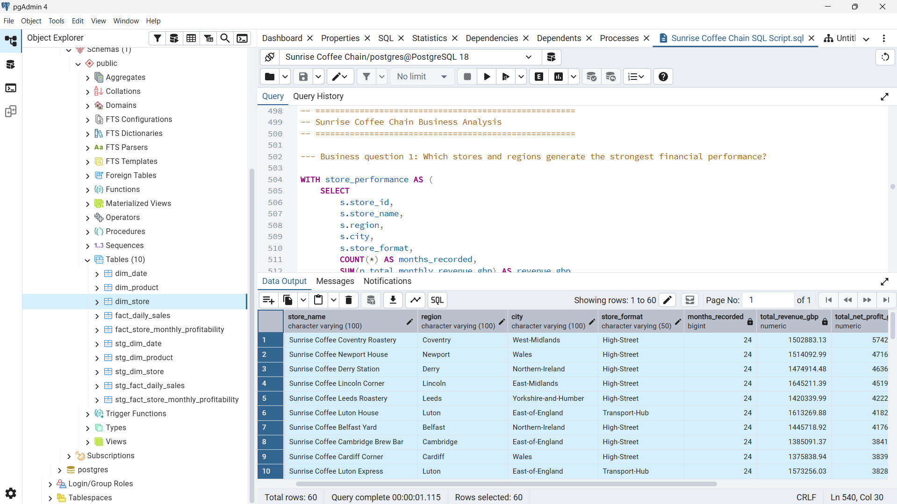

Transforming raw, messy data into clean, structured datasets ready for analysis and reporting.
↗Data Analyst · BI Analyst · Power BI Developer
Hi, I'm Joshua Bakare.
I build clarity from data.
I use SQL, Power BI, and Excel to extract and transform data, uncover meaningful insights, and build interactive dashboards that make complex information easy to understand and act on.
01 About me
I'm passionate about creating analytical solutions that help businesses make smarter decisions using data.
My interest in data comes from something I genuinely enjoy: solving problems and making sense of information. I like taking a messy dataset, figuring out what the numbers are saying, and finding the patterns and insights that can help answer important questions.
Why hire me
- I have a strong foundation in SQL, Power BI, and Excel, built through hands-on, real-world business scenarios.
- I have an analytical mindset that digs past what happened in the data to why it happened and what to do next.
- I'm a fast learner with a genuine curiosity for solving problems, not just running reports.
- I'm early in my career but invested, having prioritized building real technical and analytical skill over just theory.
- I'm reliable and coachable, looking to contribute, learn quickly, and grow in a professional environment.
I may be early in my career, but I'm confident in my ability to learn quickly, solve problems, and get the job done.
“Good analysis doesn't just explain what happened; it helps people decide what to do next.”PROFESSIONAL PHILOSOPHY

Joshua Bakare · Lagos, Nigeria
2+Years experience
10+Projects completed
8+Dashboards built
02 My skills
Technologies I work with
SQLProgramming
Power BI DesktopVisualization
DAXProgramming
Microsoft ExcelData analysis
Power QueryData transformation
Power PivotData modelling
MySQLDatabases
PostgreSQLDatabases
Services offered
Building interactive Power BI dashboards that turn complex data into clear, actionable insights.
↗Designing and maintaining efficient SQL databases for reliable data storage and retrieval.
↗Analysing business performance, KPIs, and processes to support smarter decisions and strategy.
↗03 Selected work
Recent Projects
01 / POWER BI
Fraud & payments analytics
The African Gig Economy & Digital Wallet Risk Dashboard
A 3-page Power BI dashboard suite for fraud risk officers and operations teams, covering transaction volume, fraud loss, completion rates, payment channels, KYC exposure, and gig-worker risk profiles. The analysis spans Ghana, Kenya, Nigeria, and South Africa and is organized around a star-schema data model.
02 / POWER BI
Professional services analytics
LexEuropa Legal Intelligence Analytics
A 3-page Power BI suite for a pan-European law firm, tracking revenue, profit margin, outstanding balances, lawyer utilization, billable hours, client risk, and case profitability. It compares performance across offices in Frankfurt, London, Paris, Amsterdam, and Brussels.
03 / SQL

Retail & store performance
Sunrise Coffee Chain SQL Analytics
An end-to-end PostgreSQL analytics project built on a star-schema data warehouse to analyse store-level financial performance, product mix, loyalty programme effectiveness, cost vulnerability, and strategic investment priorities across a UK coffee chain.
04 Experience
MAY 2025 — OCTOBER 2025
VDL
Technologies
Data & Quality Assurance Intern (SIWES)
⌖ Lagos, Nigeria
Responsibilities
- Queried relational databases across 3+ gaming services using SQL to extract player performance data across daily, weekly, and monthly reporting cycles, producing accurate leaderboard reports for reporting officers.
- Extracted, cleaned, validated, and transformed raw CSV datasets in Microsoft Excel, resolving inconsistencies, standardizing formats, and structuring datasets across multiple reporting periods.
- Conducted end-to-end manual QA testing across 5+ gaming and consumer-facing services, executing test scenarios, identifying defects, and escalating issues to technical teams.
- Created structured defect reports with reproducibility steps, severity classifications, and supporting evidence, enabling development teams to prioritize and resolve defects efficiently.
05 Credentials
Education & Certifications
EDUCATION
B.Sc. Computer Science
Redeemer's University, Ede
GraduatedAugust 2026
CERTIFICATIONS
Data Analyst Associate
DataCamp
Data Analytics Diploma
Utiva
Contact
Have a data
problem? Let's solve it.
Open to freelance, remote, contract, and on-site roles. If you have scattered data that needs to become a clear, decision-ready dashboard, let's talk.
Get In Touch